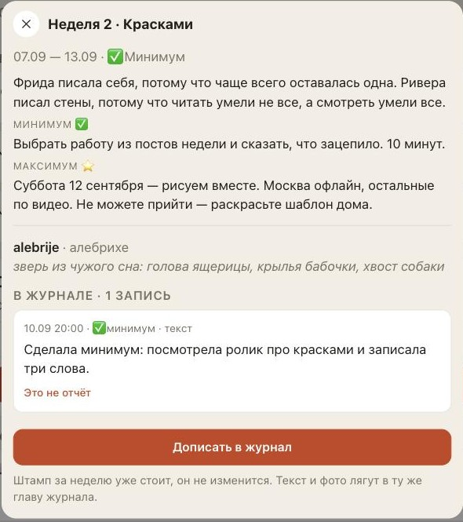
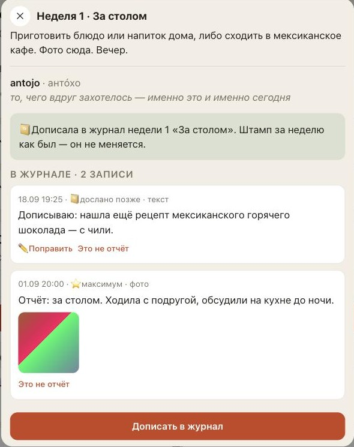
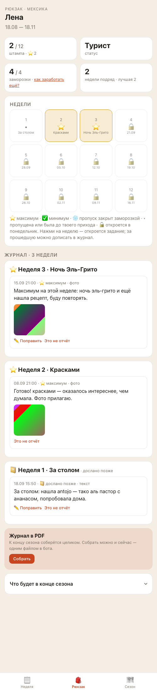
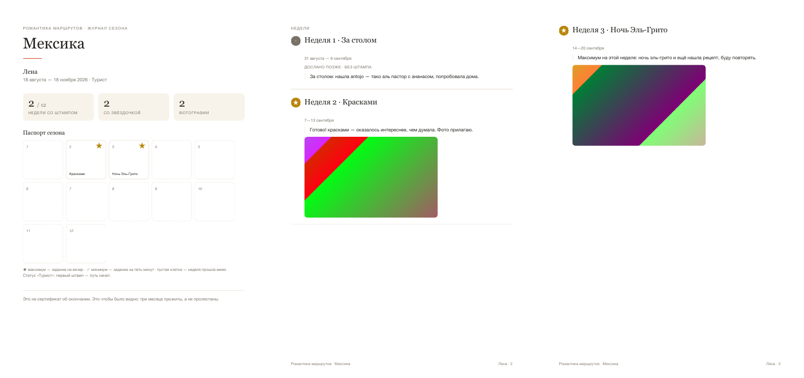
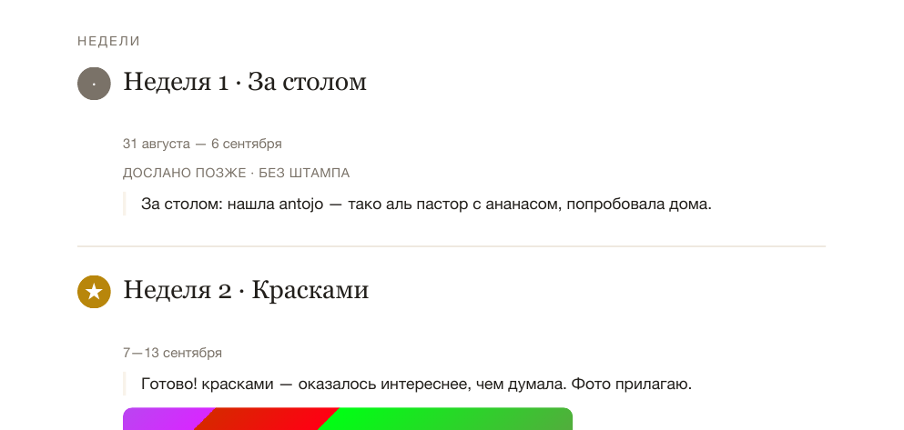

Дослать за прошедшую неделю — готово на стенде
Отчёт на 18 сентября. Готово на стенде — это тренировочная копия бота с придуманными участницами, живые люди её не видят. Что появится у участниц и у тебя, как проверено, что осталось. Твоё «выкатывай» уже есть; на прод (настоящий бот, где живые участницы) это уедет после последних проверок и живого прогона с тестовым ботом.
Что увидят люди: было → стало
Прошедшая неделя в «Сезоне»



Журнал в «Рюкзаке» и журнал в PDF




Для тебя
- Ответ реплаем работает как обычно; правка поздней записи приходит как «✏️ Правка записи за неделю N (дослано позже, штамп не трогается)».
- Сводка недели и черновик «Привала» поздние записи не считают — итоги названы в воскресенье и не переписываются. Напоминания на них не смотрят.
- В админке, в профиле участницы, поздняя запись помечена «📔 дослано позже»; заодно вид отчёта там теперь по-русски («текст», «фото»), а не «text/photo».
- В справке бота (/help) новый пункт «Хочу сделать прошедшую неделю» с путём в приложение; пункт «Старт в середине сезона» переписан, чтобы с ним не спорить.
Что меняли в записанных правилах
Как и обещала в плане: через чат дослать нельзя (только приложение), поздняя запись правится до конца сезона. И ещё две вещи, которые выяснились по ходу и записаны в правила: поздняя запись никогда не держит штамп — если участница потом пометит вовремя присланный отчёт «это не отчёт», штамп снимется, а поздняя запись останется; и дослать можно только в неделю, которую ты объявила — неделя, которую ты ещё не объявила, для участниц не существует.
Что проверено и как
автоматических тестов зелёные (до задачи 493; 13 новых — про поздние записи и про хранилище)
кругов помощников-проверяющих на стенде до того, как я перенесла код в проверенную ветку: код ×3, экраны и тексты ×3
находки за эти круги: 1 серьёзная и 14 важных закрыты; 37 мелочей: 34 закрыты по ходу, 3 оставлены — они ниже
Серьёзная находка, ради которой и нужны проверяющие: бот в ответ на /journal считал дослатую неделю «пройденной» и рисовал ей ✅ — журнал спорил бы с паспортом. Починено: считаются только штампы, дослатая глава помечена 📔. Из важных: поздние фото без пометки в PDF, приём записи в неделю-черновик, «книга сезона» рядом с «журнал сезона», «штамп как был» у тех, у кого штампа нет, цифры паспорта в выехавшем снизу листе не обновлялись после «это не отчёт». Всё закрыто, третьи круги обоих проверяющих — «проходит».
Хранилище. Один новый признак у записи отчёта — «поздняя» (да/нет); старые записи не трогались, все они «нет». Отдельно, среди пяти последних проверок, помощник по данным считает запросами к базе: штамп никогда не держится только поздними записями, поздний максимум не даёт заморозку, отмена вовремя присланного снимает штамп при живой поздней, сводка не меняется. Пять последних проверок перед выкаткой (код, экраны и тексты, данные, крайние случаи, автопроверки) идут прямо сейчас — их итог пришлю отдельно до выкатки.
Что осталось и чего не трогали
- Не проверено нигде, кроме теста: «после конца сезона кнопки нет» — на стенде дату не сдвинуть. Автоматический тест это делает (20 ноября — кнопки нет, ответ «сезон закончился»).
- Мелочи из третьих кругов, оставлены: в «Сезоне» у прошедших недель стоит ✓ даже без штампа (это из прошлой задачи — поправлю в ближайшей задаче про внешний вид); всплывающие сообщения об ошибке написаны разным голосом (старое); поздняя запись правится до конца сезона, а вовремя присланная — только пока идёт её неделя (по правилу; вопрос к тебе — см. «Коротко»).
- Не трогали: приём отчётов за текущую неделю, штампы, заморозки, уровни, напоминания, админку. Архив страны — отдельная задача.
Что дальше
Сначала — твой ответ на вопрос из «Коротко» (правка поздней записи до конца сезона — оставляем?). Если оставляем как есть — ничего делать не надо, выкатываю после проверок. Если хочешь иначе — это правка на полдня, выкатку сдвинет на день. Потом живой прогон с тестовым ботом и выкатка. После выкатки — с телефона в настоящем боте:
- «🎒 Открыть клуб» → «Сезон» → нажми «2. Красками» → внизу «Добавить в журнал» (или «Дописать», если отчёт за неделю у тебя есть).
- Напиши пару слов, добавь фото → «Отправить». Квитанция и запись «📔 дослано позже» — тут же; тебе в чат — копия «дослала за неделю 2».
- «Рюкзак»: штампы и заморозки те же, в журнале — глава недели 2 с пометкой.
- В пост «нажмите /start» добавь строку: «За первые недели можно дописать в журнал: «Сезон» → неделя → «Добавить в журнал». Штамп за них не ставится, но в журнале сезона будет».
Если что-то не так — скажи словами, что увидела.